PEP 8 enthält Konvention, wie man “guten/schönen” Python-Code schreiben soll. Das hilft, damit andere Programmierer (und man selbst) den Code besser lesen können. Als Beispiel:
"Function names should be lowercase, with words separated by underscores as necessary to improve readability.
Variable names follow the same convention as function names.
mixedCase is allowed only in contexts where that’s already the prevailing style, to retain backwards compatibility."
PEP 8 – Das Wichtigste
Zeilenlänge:
Max. 79 Zeichen
Variablennamen:
Kleingeschrieben mit Unterstrich oder camelCase z. B. kebab_stand oder kebabStand
Leerzeichen:
Ein Leerzeichen zwischen Operatoren z. B. x = 5 und nicht x=5
Kommentare:
Ganze Sätze und das erste Wort grossgeschrieben z. B. # Das ist ein Kommentar
PEP 8: Beispiel Zeilenlänge
# Gutx =float(input("Geben Sie eine Zahl ein: "))# Schlecht - Mehr als 79 Zeichen (83 Zeichen mit Leerzeichen)x =float(input("Geben Sie hier eine Zahl ein, welche über 10 und unter 20 ist: "))
PEP 8: Beispiel Variablennamen
# Gutanzahl_der_schueler =17# Auch gut, aber die veraltete SchreibweiseanzahlDerSchueler =17# Schlecht - Nicht kleingeschriebenAnzahl_der_Schueler =17# Schlecht - Der Variablenname soll selbsterklärend seinx =17# Ausnahme: Loops und andere temporäre Variablenfor i inrange(10):print(i)
PEP 8: Beispiel Leerzeichen
# Guti =0while i <10: i = i +1# Schlecht - Kein Leerzeichen zwischen den Operatoreni=0while i<10: i=i+1
PEP 8: Kommentare
# Gut# Dieser Loop berechnet die 7er-Reihe bis 1000 (1x7, 2x7, 3x7…)for i inrange(int(1000/7)):print((i +1) *7)# Schlecht# (1) Ganze Sätze# (2) Erste Wort muss gross sein# (3) Kommentare sollen helfen, den Code zu verstehen.# z. B. "berechne (i+1)*7" steht bereits im Code,# dann braucht es keinen Kommentar dafür.# loop bis 1000for i inrange(int(1000/7)):print((i +1) *7) # berechne (i+1)*7
Kollaborations- und Versionsverwaltungstool für Softwareentwickler (vgl. Google Docs)
2005 von Linux-Gründer Linus Torvalds entwickelt
Konsolenanwendung, aber es gibt auch GUIs
De-Facto Standard in der Softwareindustrie
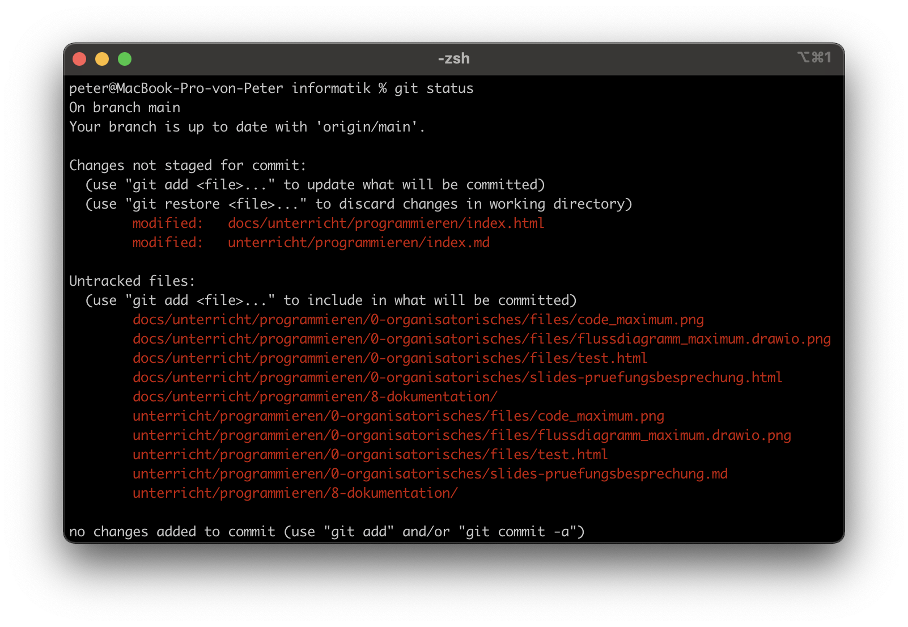
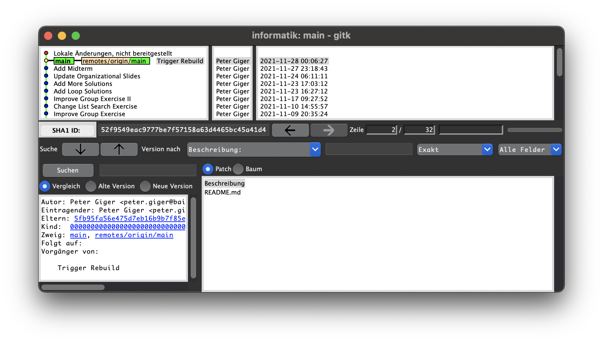
Was ist GitHub?
Hosting Service für Git (also eine Website, welche einen Git-Server zur Verfügung stellt)
De-Facto Standard für Open-Source Software (Linux, LibreOffice…)
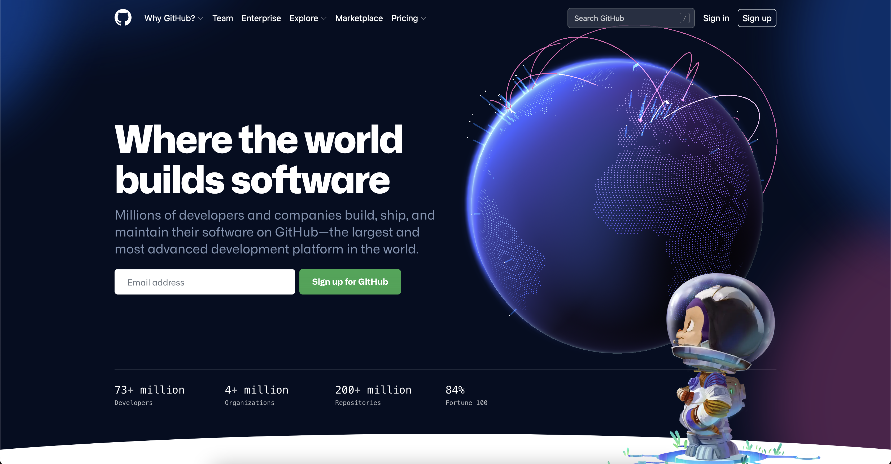
Live-Auftrag: GitHub Account Erstellen
Erstellen Sie einen Account auf GitHub (Sign up). Die E-Mail-Adresse muss dabei echt sein, da Ihnen ein Verifizierungscode zugesendet wird.
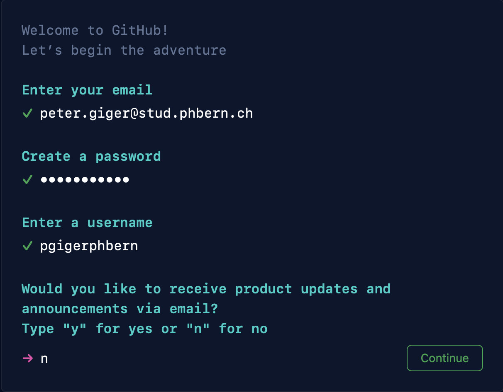
Was ist ein Git(Hub) Repository?
Ein Repository (Repo) ist ähnlich wie ein Ordner
Generell gilt: 1 Projekt = 1 Repositorys
Ein Repo kann öffentlich oder privat sein
Beispiel Linux:
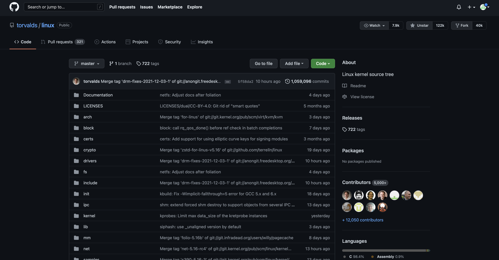
Live-Auftrag: GitHub Repo Erstellen
Erstellen Sie nun ein GitHub Repositoy (create repository). Geben Sie dafür einen passenden Namen ein und vergessen Sie nicht, “Add a README file” zu wählen.
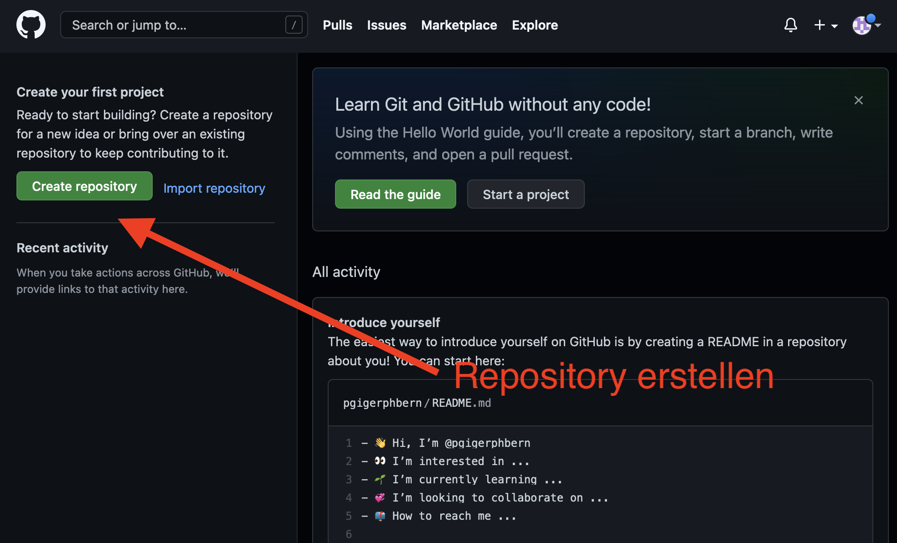
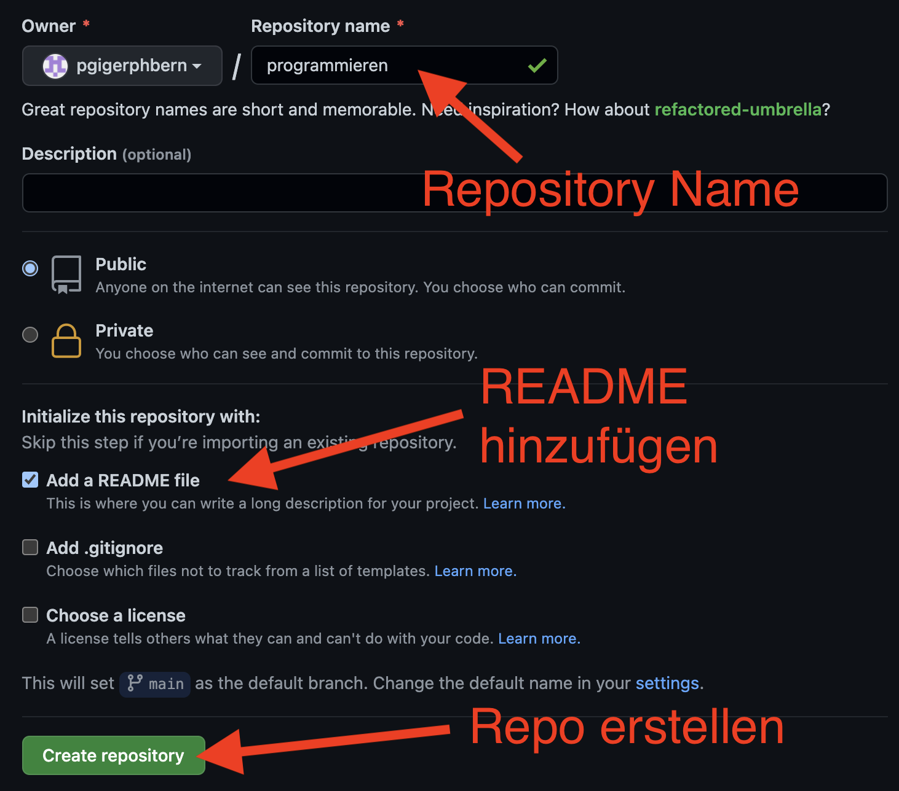
GitHub, Markdown und das README.md
Dokumentationen auf GitHub werden in Markdown geschrieben
Das README.md beinhaltet die Dokumentation für das gesamte Repo. Beispiele: Markdownify, GitPoint
Bearbeiten Sie nun das README.md (Markdown) und überprüfen Sie in der Vorschau, ob das Resultat Ihren Vorstellungen entspricht. Um die Datei zu speichern, geben Sie eine Beschreibung der Änderung ein und klicken Sie auf “Commit changes”.
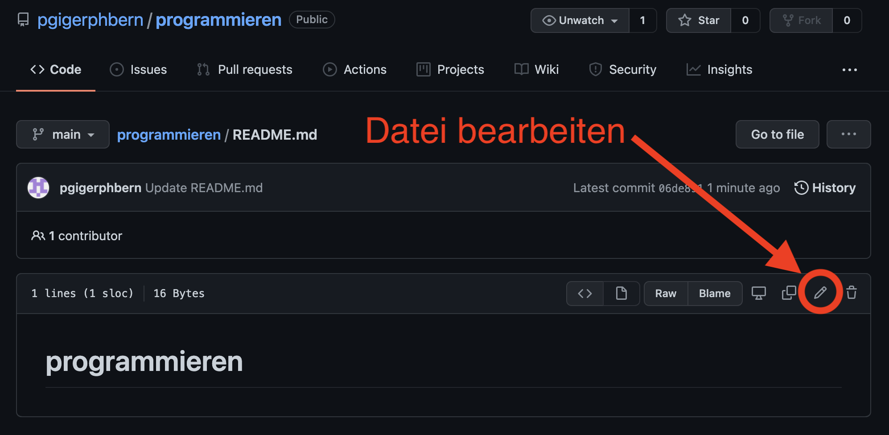
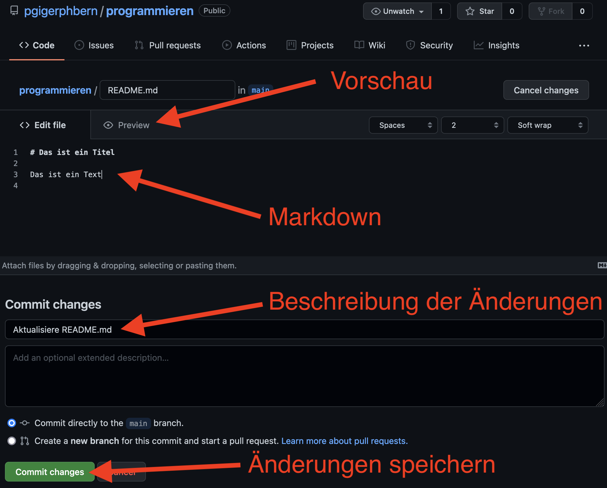
Commits und Versionierung
Commits beinhalten die Änderung einer/mehrerer Datein (History der Änderungen)
Ein Commit sollte so benannt werden, dass klar ist, was geändert wurde
Commits sollten in der Befehlsform geschrieben werden
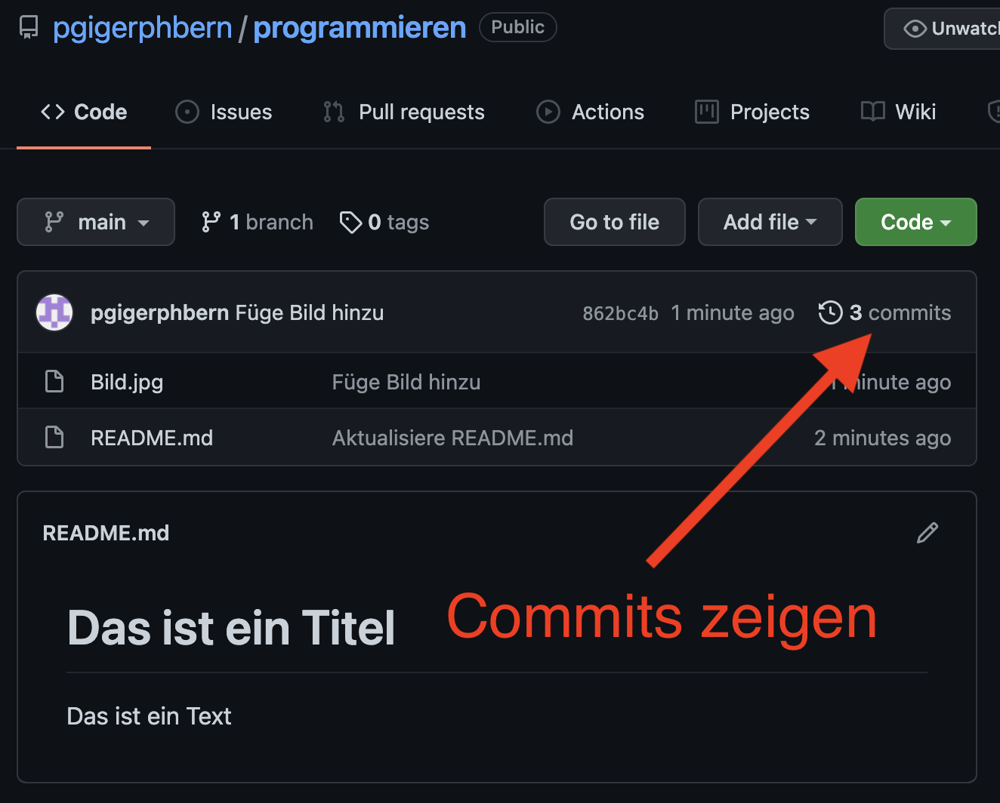
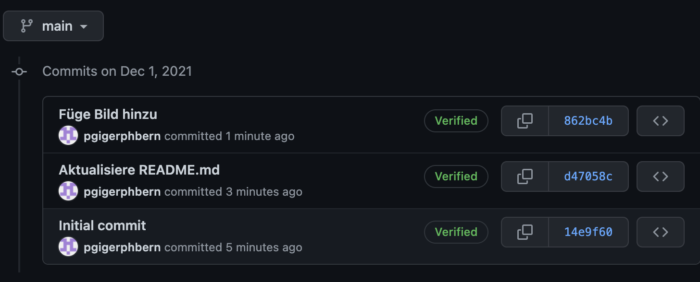
Live-Auftrag: GitHub Datei Hochladen
Laden Sie eine beliebige Datei (z. B. ein Bild oder .py Datei) auf GitHub. Benennen Sie den Commit korrekt und verständlich. Schauen Sie dann, ob ihr Commit erfolgreich hinzugefügt wurde.
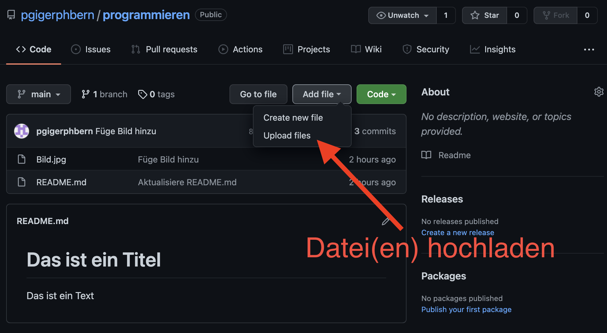
Auftrag (ca. 45 Min): Veröffentlichen Sie eines Ihrer Programme (z. B. aus den Aufträgen) auf GitHub
Wählen Sie eines ihrer Programme
Formatieren Sie den Code (PEP 8 inkl. Kommentare)
Laden Sie den dokumentierten Code (.py) auf GitHub
Beschreiben Sie ihr Programm im README.md
Einleitung: Was macht es und wie wird es benutzt? (mind. 3 Sätze + mind. 1x Screenshot)
Features: Eine Liste von Features (mind. 3 Punkte)
Reflexion: Was haben Sie in den letzten Wochen gelernt und was nehmen Sie mit? (mind. 1/2 Seite)